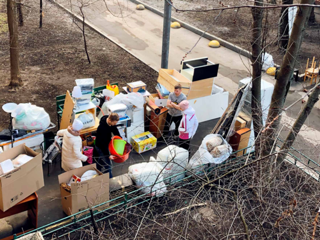

Заказывайте продукты к Новогоднему столу на сайте METRO
Реклама
Лучший флагман для фотоохоты: обзор HUAWEI Mate 40 Pro
Промо
5 причин, почему нужно перестать тратить время на выращивание овощей и фруктов на даче
Реклама
МКБ создаёт цифровую инвестиционную платформу
Промо

Покупка квартиры до свадьбы: кому жилье достанется при разводе
Реклама
«Куда бы я ни приезжала, я всё время чему-то училась»: Светлана Захарова о зрителях, закулисье балета и Коко Шанель